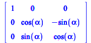
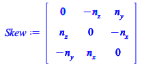

List of MBD procedures
Primary rotation matrices and kinematic procedures
Primary axes rotation matrices
Rotation matrix around x axis
| > | Rx := theta -> <<1,0,0>|<0,cos(theta),sin(theta)>|<0,-sin(theta),cos(theta)>>:
Rx(alpha); |
|  | (2.1.1) |
Rotation matrix around y-axis
| > | Ry := theta -> <<cos(theta),0,-sin(theta)>|<0,1,0>|<sin(theta),0,cos(theta)>>:
Ry(beta); |
| (2.1.2) |
Rotation matrix around the z-axis
| > | Rz := theta -> <<cos(theta),sin(theta),0>|<-sin(theta),cos(theta),0>|<0,0,1>>:
Rz(gamma); |
| (2.1.3) |
Transformation matrix
Create the transformation matrix given the rotation matrix and tre origin of the frame
| > | TM := proc(R::Matrix(3,3),P::{Vector(3),list},$)
local tmp; if type(P,'list') then if nops(P) <> 3 then error "Error: expected dimension for %1 is 3", P; end ; end; tmp := <R|convert(P,Vector)>; <tmp,Transpose(<0,0,0,1>)>; end: |
| > | TM(Rx(alpha),[x,y,z]),
TM(Rx(alpha),<x,y,z>); |
| (2.1.4) |
Compute the inverse of the Transformation Matrix
| > | invTM := proc(TM::Matrix(4,4),$)
local R,P,tmp; R := TM[1..3,1..3]; P := TM[1..3,4]; tmp := <Transpose(R)|-R.P>; <tmp,Transpose(<0,0,0,1>)>; end proc: |
Compute derivative of vector or of a list w.r.t. to a symbol or a function
| > | diffF := proc(v::{algebraic,list,Vector,Matrix},x::{symbol,function},$)
local ss,xx, tmp; if type(x,function) then ss := x = xx ; tmp := subs( ss, v): subs( xx = x, map(e->diff(e,xx),tmp)); else map(e->diff(e,x),v); end; end proc: |
| > | diffF([x(t)^2+1],x(t)) |
| (2.1.5) |
| > | jacobianF := proc(L::{list,Vector},x::list,$)
local i,j; convert([seq([seq(diffF(L[i],x[j]),j=1..nops(x))],i=1..nops(L))],Matrix); end proc: |
| > | velocity := proc(v::{Vector},$)
diffF(v,t); end: |
Extract components of a vector
| > | comps_XYZ := proc(v::{Vector(3),list(3)})
local i; seq(v[i],i=1..3); end proc: comps_XY := proc(v::{Vector(3),list(3)}) local i; seq(v[i],i=1..2); end proc: |
Angular velocity
| > | angularVelocity := proc(R::Matrix(3,3),$)
local skew_ang,ang_vel; skew_ang := simplify(Transpose(R).map(diff,R,t)): ang_vel := <skew_ang[3,2],skew_ang[1,3],skew_ang[2,1]>; # skew_ang,ang_vel; ang_vel; end: |
Skew matrix of rotation axis
| > | SkewMat := proc(v::{Vector,list},$)
local vv,f; f := (x,y,z)-><<0,z,-y>|<-z,0,x>|<y,-x,0>>; f(v[1],v[2],v[3]); end: |
| > | Skew := SkewMat(<n__x,n__y,n__z>); |
|  | (2.1.6) |
| > | angularVelocity(Rz(theta(t)).Rx(alpha(t))) |
| (2.1.7) |
Cross product
| > | crossProduct := proc(v1::{Vector,list},v2::{Vector,list},$)
SkewMat(v1).convert(v2,Vector); end; |
| (2.1.8) |
Dot product
| > | dotProduct := proc(v1::{Vector},v2::{Vector},$)
Transpose(v1).v2; end; |
| (2.1.9) |
Procedures to visualise 3D objects
Procedure to display a frame as three cylindrical arrows
| > | draw_vec := proc(p::Vector(3),v::Vector(3),sf::scalar:=1,col::string:="DeepPink",$)
#local ; # display(plots:-arrow(p,sf*v,color=col, shape=cylindrical_arrow), scaling=constrained); end: |
Procedure to display a frame as three cylindrical arrows
| > | draw_frame := proc(R::Matrix(4,4),sf::scalar:=1,$)
local p0,i1, j1, k1; # extract unit vectors from rotatin matrix p0 := convert(R[1..-2,4],list); i1 := R[1..-2,1]; j1 := R[1..-2,2]; k1 := R[1..-2,3]; display(plots:-arrow(p0,sf*i1,color="Red", shape=cylindrical_arrow), plots:-arrow(p0,sf*j1,color="LimeGreen",shape=cylindrical_arrow), plots:-arrow(p0,sf*k1,color="Blue", shape=cylindrical_arrow), plottools:-sphere(p0,0.05*sf,color="Goldenrod"), scaling=constrained); end: |
Procedure to rotate a body given a rotation matrix
| > | rotate_translate_body := proc(obj, R::Matrix(4,4),sf::scalar:=1,$)
local f, ff, FF,obj_new,FONT_TYPE,FONT_SIZE_LAB,FONT_SIZE_TIT; FONT_TYPE := "Helvetica"; FONT_SIZE_LAB := 16; FONT_SIZE_TIT := 18; # ccompute the projection of the coordinates of a point <x,y,z>, # or rotate the coordinates of a point of a body FF := evalf(convert(R.<x,y,z,1>,list)): # create a function to apply rotation to a point <x,y,z> ff := unapply(FF[1..3],[x,y,z]): # create a transformation rule to apply to points of an Maple graphical object f:= plottools[transform]((x,y,z)->ff(x,y,z)): obj_new := f(obj); #apply transformation to graphical object # show the object display(obj_new,scaling=constrained, labelfont = [FONT_TYPE,FONT_SIZE_LAB], axesfont = [FONT_TYPE,FONT_SIZE_LAB], titlefont = [FONT_TYPE,bold,FONT_SIZE_TIT]); end: |
Lagrange Equations
Kinetic energy
Input:
| > | kineticEnergy := proc(m::scalar, G::Vector(3), T::Matrix(3,3), Ix::scalar,Iy::scalar,Iz::scalar, Ixy::scalar,Ixz::scalar,Iyz::scalar, $)
local VG,KET, gx,gy,gz,KER, Itensor, omega; Itensor := <<Ix,-Ixy,-Ixz>|<-Ixy,Iy,-Iyz>|<-Ixz,-Iyz,Iz>>; print(%); # kinetic energy due to translation motion - - - - - VG := velocity(G); KET := 1/2*m*dotProduct(VG,VG): #when VG is linear, KET is quadratic #kinetic energy due to rotation motion - - - - - - - omega := angularVelocity(T); #angular velocity with respect to the moving frame KER := 1/2 *Transpose(omega).Itensor.omega; if has(KER,{sin,cos}) then KER := simplify(KER,trig): end if: # total energy - - - - - - - - - - - - - - - - - - - KET + KER; end proc: |
Potential energy
Compute the gravitational energy of a multibody system by evaluating the force field associated to the <_gravity> acceleration. "
| > | gravitationalEnergy := proc(m::scalar, G::Vector(3), gravityVec::Vector(3), $)
local VG,KET, gx,gy,gz,KER, Itensor, omega; -m*dotProduct(G,gravityVec); end proc: |
Generalised forces and torques
| > | generalisedTorques := proc(R::Matrix(3,3),T::Vector(3), q::list,$)
local i, Q_gen, dRdq,dOmega, Tb; Q_gen := Vector(1..nops(q),[]); Tb := Transpose(R).T; # torque in moving frame for i from 1 to nops(q) do dRdq := simplify(Transpose(R).diffF(R,q[i])): dOmega := <dRdq[3,2],dRdq[1,3],dRdq[2,1]>: Q_gen[i] := dotProduct(Tb,dOmega); end do: Q_gen; end proc: |
| > | (*
RR := Rx(theta__x(t)).Ry(theta__y(t)).Rz(theta__z(t)); # virtual rotation matrix in moving frame simplify(Transpose(RR).diffF(RR,theta__y(t)));[%[3,2],%[1,3],%[2,1]]; # virtual rotation matrix simplify(Transpose(RR).diffF(RR,t),trig); AA,bb := GenerateMatrix([%[1,3],%[1,2],%[2,1]],diff([theta__x(t),theta__y(t),theta__z(t)],t)); # Virtual displacement w.r.t. theta__y: AA.<0,1,0>; AA.<0,1,0>; *) |
| > | generalisedForces := proc(P::Vector(3),F::Vector(3), q::list,$)
local i, Q_gen, dPdq; Q_gen := Vector(1..nops(q),[]); for i from 1 to nops(q) do dPdq := diffF(P,q[i]): Q_gen[i] := dotProduct(F,dPdq); end do: Q_gen; end proc: |
| > | #generalisedForces(<x(t),y(t),0>+Rz(theta(t)).<Lx,Ly,0>,<Fx,Fy,0>,[x(t),y(t),theta(t)]); |
| > | #generalisedTorques(Rz(theta(t)),<Tx,Ty,Tz>,[x(t),y(t),theta(t)]); |
Lagrange equations
| > | lagrangeEquations := proc(L::scalar,Phi::list(algebraic),q::list(function))
#description "Lagrange equations d/dt(dL/dqdot)- dL/dq": local qdot, Leqns,i, JqL: # - Qforce[i]; if nops(Phi) <> 0 then JqL := Transpose(jacobianF(Phi,q)).<seq(lambda__||i(t),i=1..nops(Phi))>; else JqL := Vector(1..nops(q),fill=0); end; Leqns := Vector(1..nops(q),[]); for i from 1 to nops(q) do qdot := diff(q[i],t): Leqns[i]:= diff ( diffF(L,qdot), t) - diffF(L,q[i]); end do: Leqns-JqL; end: |
| > | KE := kineticEnergy(m, <x(t),y(t),z(t)>,Rz(theta(t)),Ix,Iy,Iz, Ixy,Ixz,Iyz);
PE := gravitationalEnergy(m, <x(t),y(t),z(t)>,<0,-g,0>); |
| (2.3.1) |
| > | lagrangeEquations(KE-PE,[],[x(t),y(t),z(t),theta(t)]) |
| (2.3.2) |